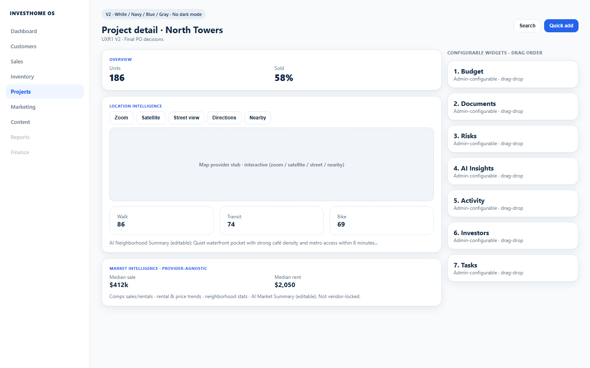

One job on Overview: status of the project. Units, timeline, team, docs daily; Finance and Advanced role-gated.
One job on Overview: project status. Backend finance and permits remain; UI hides them behind role-gated tabs.
Hero cover strip, KPIs, progress, activity. Units tab embeds inventory cards filtered to the project — not a 6-status table.
Hero-led project home with calm KPIs — construction + sales pulse without packing permits and ROI into the default view.

Primary mobile job: finish today’s queue — not recreate the desktop dashboard.
Sales funnel mini drills to Sales filtered by this project.
| Action | Where | Outcome |
|---|---|---|
| Edit project | Header | Daily fields; Advanced collapsed |
| Add unit | Header | Inventory create scoped to project |
| Upload doc | Header / Docs | Files tab |
| Open unit | Units tab | Inventory drawer |
| Drill Sales | Mini funnel | Pipeline filtered |
Project pages today over-expose every domain. Tab discipline and progressive Finance/Advanced let sales use the page daily.
Visual package only. No routes, components, or APIs changed. Approve or request changes before any implementation.